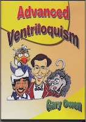

We have a winner!
11/27/2009
{kind=link}

ADVANCED VENTRILOQUISM - DVD
By Gary Owen
Taped live at the 2006 International Ventriloquist Convention, Gary Owen in this workshop setting, shares ideas on how to make your show look like a pro. Staging, music, and choreography. Plus an interactive segment where you will learn proper techniques for good voice and lip control. And Gary demonstrates how easily you can develop the baby cry, distant voice, plus a variety of dialects, accents, voice characterizations and polyphony. Learn from the master!!
The person responding with the required 5th post was Canon John Jordan (Ontario). Congratulations! Next Give-away will be Monday (11/30/09)
* * * * *
From Ron Havens: I believe I was at that workshop and could possibly even be in the DVD.
From Clinton: Gary still has copies of this DVD for sale. They are $25.00 each which includes shipping. Email Gary to purchase: garyowenprod@sbcglobal.net
From Canon John Jordan: Thank you Clinton. Imagine winning a prize and being rewarded for indulging in one of my daily morning pleasures ~ checking in with the Daily Journal. You are certainly spreading joy in the world by sharing your hints, tips, and above all, your years of experience. Blessings, John.